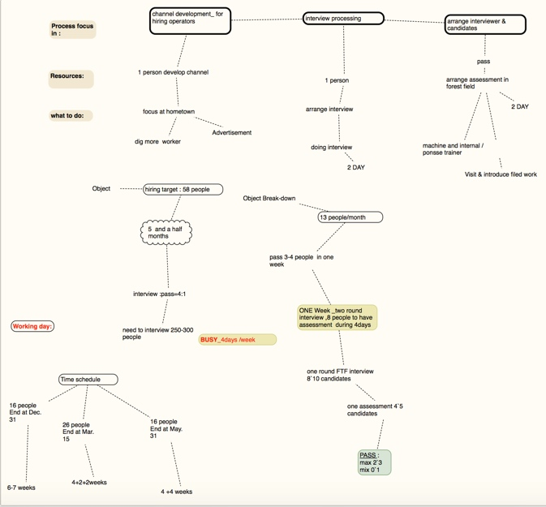

烧那火眼金晶——发掘高潜力人才
今夜再次驻足在他的故事里，拣取其中一些材料，看他是如何烧那火眼金睛。
他写的这本书获得了第八届年度Axiom 商业图书人力资源管理类金奖。
移花接木
写苹果、谷歌、脸书管理秘诀的书刊大把，读完却无法让你复制出其中任何一个。
我们读书，学新技能，读完以为技能得来不费力，马上就能用了，找个高管过来也是这般想，找过来就能出成绩了。
事实上人才技能并不是那么容易移植
我们可以说最优秀的人才，从一个位置到另一个位置，会利用独特的优势变得更加强大。——「最优秀的人才」——这说起来多少还是有点事后诸葛的味道。
他提醒我们
如果你想让你的明星保持辉煌，不要相信高管无论如何时何地都会耀眼的神话。相反，要测评候选人的可移植性。
人才并不像我们想的那样容易移植，因为绩效（Performance）不仅牵涉一个P , 而是 5 个P ——流程（process）、平台（platform）、产品（product）、人才（people）以及办公室政治（politics）——其中大多数你无法带走。
我们更需要注意到大多数人的才能并不容易移植，在事前做好预警。
如何做那预警呢？，费洛迪在书中提到了几个可以汲取的教训——以便我们有所行动。
起点和终点很重要
他相信在贫瘠恶劣环境中生存的牛，一定会在肥沃的农场中茁长成长。所以反直觉的策略—— 寻找能够 在弱小公司成长的真明星。未必不是个好方向。
专家岗位的人才比首席运营官更容易移植
因为首席运营官他们的工作涉及很多内部情况和关系。考察行业、文化、团队特点
奇花异果
外行业人才，带来多样性。外行人才，是那条鲇鱼吗
我们所处的世界，知识容易获得，也很容易过时。面对的环境错综复杂，并且越来越模糊不确定。
他相信那些愿意挑战自我并成功转型的求职者胜过因循传统职业路径的人。而不管这个人，是否缺乏需要的行业、职能、背景。并且认定这个人具备了适应新公司、新部门、新文化和新战略的能力。
于是新的视角，要做得不同的成果，就需要使改变选才的次序。
他认为
鉴别潜力是我们的首要任务，我们要在一个卓越人才池中发现那些职业生涯呈线性发展并取得成功的人。
反过来，不禁要问：寻求自身多样化的人，是否就是那朵夺目的奇花? 是否就能结出异果？
他认为我们要看几个关键特质，以得到更多优秀的人在身旁共事。
- 包括可移植性、情商相关的灵活性、适应性、抗压能力、同理心以及关系管理。
- 包括组成潜力的各族（正确的动机、求知欲、洞察力、沟通力等）
- 更有在价值观、文化契合与否的不妥协。
待续。。。
欢迎联系 Arvin Yu , 邮箱：yuyandong@outlook.com
本作品采用 知识共享署名-非商业性使用-禁止演绎 3.0 Unported许可协议 进行许可。
批量招聘案例
今天翻资料，看到这张图，记录于此，以便回忆。
背景概述
林业种植和采伐机械化运作，在中国走最远的是芬兰的这家公司。
从2014 底开始，除了请来麦肯锡做全公司的改革咨询，机械采伐团队亦为了实现年 150万立方 的采伐量而加快了集中化管理进程。
于是团队的改革先动了，不仅要招聘机械化运作经理和现场管理人员，还有一大批的现场操作人员需要招聘。
当时进口采伐机械专项项目——8个培训班次 ，70多名新机手的招聘（1 批次招聘的目标是 8 人） 。
项目规划分解
项目任务紧，2015 年每个月都要进一批人，配合将到港口的机器，以8-10 人为宜。当时想要增加一些人手，于是我画了下图，后面因为多种原因，最后还是一个人操刀了。
这张图规划了当时想要的人力资源，以及分解了项目前期操作上一些分工和进度计划。

项目具体执行与效果
执行策略
当时的实践——策略的调整
- 首先从招聘流程入手，和采伐部门讨论他们对新机械操作手的招聘需求（特别是机器到港口的时间），评估和确定了每一培训班次的入职时间，确保在该时间节点完成该班次 8 位新人入职；
- 并定制流程节点，加快招聘速度：比如：在新招聘需求的审批，文件提交走的过程中，提前展开招聘方案并大力地实施（广告发布、 甄选、入职安排 ）；
- 当然还有招募的方式和面试的方式的诸多调整（一上午面试10-15人），比如带候选人到林地参观…… 省略招聘体验方面的流程
效果
招聘每个月为公司增进了几百万元的产量。
a) 12 年有 2 个招聘经理 + 1 个招聘助理负责该项目，14 年到我接手后， 由我 1 人负责；
b) 招聘周期从2 个月完成 --> 1 个月--> 2 周完成；
c) 产量收入至少每个月增加： 30 天X15 万/天=450 万元 ；
数字估算过程如下
正常作业的情况下，一个机器 24 小时，300 方的作业量，机器空一天的损失是 100 方 x 3 个班次 X 700 元 = 210，000 元；
新机器到来的时候，确保新机手已经完成培训，能马上开始投入工作。
如果空缺1个人那就是 一天 6-7 万元的损失！ 一个招聘批次 8-10 个人，那 1 天就是 60-70 万的业务影响；
针对新人不可能一开始就正常作业，我们把他们的产出减半。当机器到港后，招聘到岗晚一天，一天就有 20-30-40 万的产量损失。
这次策略的调整带来的收益有多少呢？
按产量 至少每个月 30 天 X 15 万=450万元 。
欢迎联系 Arvin Yu , 邮箱：yuyandong@outlook.com
本作品采用 知识共享署名-非商业性使用-禁止演绎 3.0 Unported许可协议 进行许可。
Copyright © 2015 Powered by MWeb, Theme used GitHub CSS.